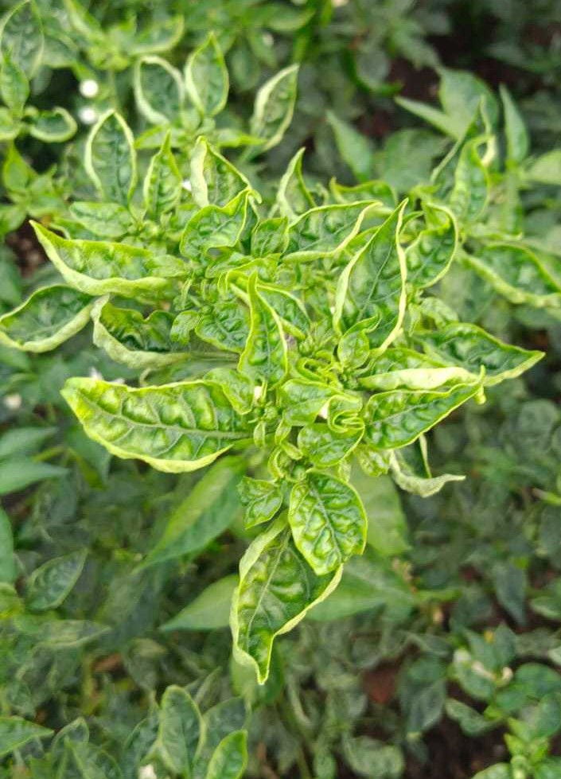
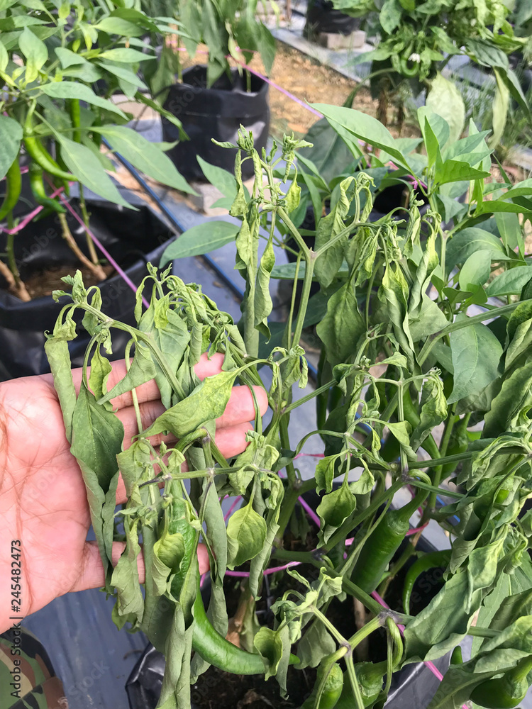

HOME
ABOUT
CONTACT

Chilli Leaf Curl Disease:
This disease’s epidemics is most common during
March to June in Southern India and June to October
in Northern India.
Symptoms:
Upward or inward curling and crinkling of leaves in affected plants
Shortening of internodes
Reduction in the size and number of leaves in young plants giving ‘bushy appearance’
Affected leaves may turn yellow, especially at the margins or in between the veins
Thickening of veins in leaves Reduced flowering and fruiting

Chilli Mosaic Disease:
Mode of spread: The disease may also spread through
mechanical contact and through seeds.
Symptoms
Initially, chlorotic lesions appear on the leaves followed by mosaic pattern of light and dark green areas, giving them a distorted appearance
Leaves of infected plants may become distorted, with puckering or twisting of the leaf margins
In some cases, presence of yellow streaks can also be seen on the fruits.
Infected plants exhibit stunted growth and produce less fruits